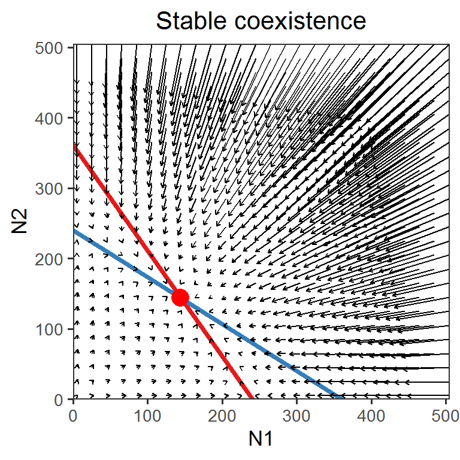
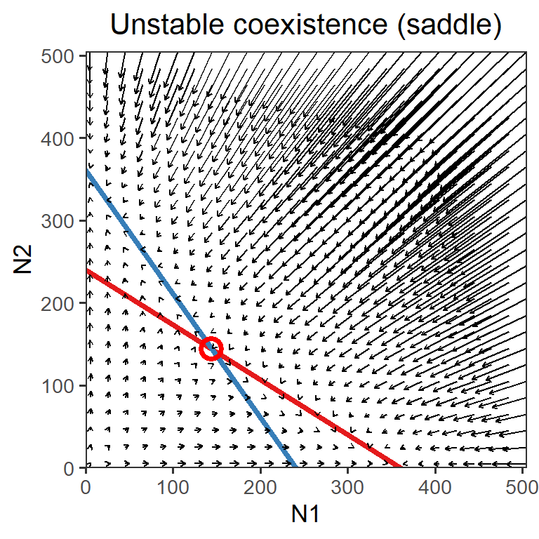

Week 7
Lotka-Volterra model of competition: graphical analysis
Lecture in a nutshell
- Model derivation
- Per capita growth rate of two competing species A and B (linear competitive effect):
- \(\frac {1}{N_{A}} \frac {dN_{A}}{dt} = r_{A}-\alpha_{AA}N_{A}-\alpha_{AB}N_{B}\)
- \(\frac {1}{N_{B}} \frac {dN_{B}}{dt} = r_{B}-\alpha_{BB}N_{B}-\alpha_{BA}N_{A}\)
- Coefficient \(\alpha_{ij}\) represents the effect of species \(j\) on species \(i\): \(\frac {d}{dN_{j}}\frac {1}{N_{i}} \frac {dN_{i}}{dt}\)
- Intraspecific interaction: \(i = j\); Interspecific interaction: \(i \ne j\)
- Categorizing types of interspecific interaction:
- Mutualism: both \(\alpha_{AB}\) and \(\alpha_{BA}\) is positive
- Consumer-Resource: one of \(\alpha_{AB}\) and \(\alpha_{BA}\) is positive and the other is negative
- Competition: both \(\alpha_{AB}\) and \(\alpha_{BA}\) is negative
- Find the equilibrium points of the system by solving the simultaneous equations:
- \(\frac {dN_{A}}{dt} = 0\) and \(\frac {dN_{B}}{dt} = 0\)
- Four equilibrium points \((N_{A}^{*}, N_{B}^{*})\):
- \(E_{0} = (0, 0)\)
- \(E_{A} = (\frac {r_{A}}{\alpha_{AA}}, 0)\)
- \(E_{B} = (0, \frac {r_{B}}{\alpha_{BB}})\)
- \(E_{AB} = (\frac {r_{A}r_{B}(\frac {\alpha_{BB}}{r_{B}}-\frac {\alpha_{AB}}{r_{A}})}{\alpha_{AA} \alpha_{BB} - \alpha_{AB}\alpha_{BA}}, \frac {r_{A}r_{B}(\frac {\alpha_{AA}}{r_{A}}-\frac {\alpha_{BA}}{r_{B}})}{\alpha_{AA} \alpha_{BB} - \alpha_{AB}\alpha_{BA}})\)
- Per capita growth rate of two competing species A and B (linear competitive effect):
- State-space diagrams (phase plane) and isoclines
- State-space diagrams: state variables \((N_{A}, N_{B})\) as axes
- Zero net growth isoclines (ZNGIs): combinations of state variables that lead to zero growth (of the focal state variable)
- Four ZNGIs (two for each species):
- ZNGIs for species A: \(N_{A} = 0\) and \(r_{A}-\alpha_{AA}N_{A}-\alpha_{AB}N_{B} = 0\)
- ZNGIs for species B: \(N_{B} = 0\) and \(r_{B}-\alpha_{BB}N_{B}-\alpha_{BA}N_{A} = 0\)
- Graphical analysis
Four cases:
- Species A wins: \(E_{A} = (\frac {r_{A}}{\alpha_{AA}}, 0)\) when \(\frac {r_{A}}{\alpha_{AA}} > \frac {r_{B}}{\alpha_{BA}}\) and \(\frac {r_{A}}{\alpha_{AB}} > \frac {r_{B}}{\alpha_{BB}}\)
- Species B wins: \(E_{B} = (0, \frac {r_{B}}{\alpha_{BB}})\) when \(\frac {r_{A}}{\alpha_{AA}} < \frac {r_{B}}{\alpha_{BA}}\) and \(\frac {r_{A}}{\alpha_{AB}} < \frac {r_{B}}{\alpha_{BB}}\)
- Species A and B coexist (stable): \(E_{AB} = (\frac {r_{A}r_{B}(\frac {\alpha_{BB}}{r_{B}}-\frac {\alpha_{AB}}{r_{A}})}{\alpha_{AA} \alpha_{BB} - \alpha_{AB}\alpha_{BA}}, \frac {r_{A}r_{B}(\frac {\alpha_{AA}}{r_{A}}-\frac {\alpha_{BA}}{r_{B}})}{\alpha_{AA} \alpha_{BB} - \alpha_{AB}\alpha_{BA}})\) when \(\frac {r_{B}}{\alpha_{BA}} > \frac {r_{A}}{\alpha_{AA}}\) and \(\frac {r_{A}}{\alpha_{AB}} > \frac {r_{B}}{\alpha_{BB}}\)
- Species A and B coexist (unstable; there are alternative stable states \(E_{A}\) and \(E_{B}\) depending on the initial condition): \(E_{AB} = (\frac {r_{A}r_{B}(\frac {\alpha_{BB}}{r_{B}}-\frac {\alpha_{AB}}{r_{A}})}{\alpha_{AA} \alpha_{BB} - \alpha_{AB}\alpha_{BA}}, \frac {r_{A}r_{B}(\frac {\alpha_{AA}}{r_{A}}-\frac {\alpha_{BA}}{r_{B}})}{\alpha_{AA} \alpha_{BB} - \alpha_{AB}\alpha_{BA}})\) when \(\frac {r_{B}}{\alpha_{BA}} < \frac {r_{A}}{\alpha_{AA}}\) and \(\frac {r_{A}}{\alpha_{AB}} < \frac {r_{B}}{\alpha_{BB}}\)
Take-home message: For the two species to coexist stably, the (intraspecific) effect each species imposes on itself should be greater than the (interspecific) effect it imposes on the other species.
Lab demonstration
Here are the state-space diagrams and vector fields of the systems in which (1) two species exhibit stable coexistence and (2) two species exhibit unstable coexistence (saddle).
library(tidyverse)
library(deSolve)
phase_plane <- function(r1, r2, a11, a21, a22, a12, title, shape){
### Vectors
LV_competition_model <- function(times, state, parms) {
with(as.list(c(state, parms)), {
dN1_dt = N1*(r1-a11*N1-a12*N2)
dN2_dt = N2*(r2-a22*N2-a21*N1)
return(list(c(dN1_dt, dN2_dt)))
})
}
times <- seq(0, 0.1, by = 0.1)
parms <- c(r1 = r1, r2 = r2, a11 = a11, a21 = a21, a22 = a22, a12 = a12)
vector_grid <- expand.grid(seq(5, 505, 20), seq(5, 505, 20))
vector_data <- vector_grid %>%
pmap(., function(Var1, Var2){
state <- c(N1 = Var1, N2 = Var2)
pop_size <- ode(func = LV_competition_model, times = times, y = state, parms = parms)
pop_size[2, 2:3]
}) %>%
bind_rows() %>%
rename(xend = N1, yend = N2) %>%
bind_cols(vector_grid) %>%
rename(x = Var1, y = Var2)
### Phase plane
ggplot() +
geom_abline(slope = -a11/a12, intercept = r1/a12, color = "#E41A1C", size = 1.5) +
geom_abline(slope = -a21/a22, intercept = r2/a22, color = "#377EB8", size = 1.5) +
geom_segment(data = vector_data,
aes(x = x, y = y, xend = xend, yend = yend),
arrow = arrow(length = unit(0.1, "cm"))) +
geom_point(aes(x = (a22*r1-a12*r2)/(a11*a22-a12*a21),
y = (a21*r1-a11*r2)/(a12*a21-a11*a22)),
color = "red",
size = 4,
shape = shape,
stroke = 2) +
scale_x_continuous(name = "N1", limits = c(0, 505), expand = c(0, 0)) +
scale_y_continuous(name = "N2", limits = c(0, 505), expand = c(0, 0)) +
theme_bw(base_size = 13) +
theme(panel.grid = element_blank(),
plot.title = element_text(hjust = 0.5)) +
labs(title = title)
}
phase_plane(r1 = 1.2, r2 = 1.2, a11 = 1/200, a21 = 1/300, a22 = 1/200, a12 = 1/300, title = "Stable coexistence", shape = 16)
phase_plane(r1 = 1.2, r2 = 1.2, a11 = 1/300, a21 = 1/200, a22 = 1/300, a12 = 1/200, title = "Unstable coexistence (saddle)", shape = 1)